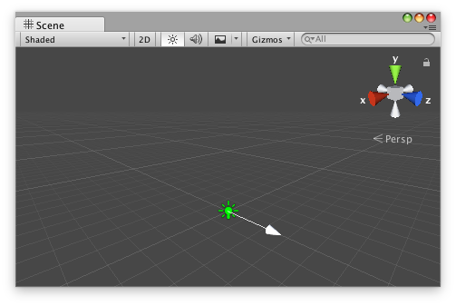

Handles.ScaleValueHandle
public static float ScaleValueHandle(float value,
Vector3 position,
Quaternion rotation,
float size,
Handles.CapFunction capFunction,
float snap);
Parameters
| value | The value the user can modify. | |
| position | The position of the handle in the space of Handles.matrix. | |
| rotation | The rotation of the handle in the space of Handles.matrix. | |
| size | The size of the handle in the space of Handles.matrix. Use HandleUtility.GetHandleSize if you want a constant screen-space size. | |
| snap | The snap increment. See Handles.SnapValue. | |
| capFunction | The function to call for doing the actual drawing. |
Returns
float The new value modified by the user's interaction with the handle. If the user has not moved the handle, it will return the same value as you passed into the function.
Description 描述
Make a 3D handle that scales a single float.
This method will draw a 3D-draggable handle on the screen. The handle does not move and will scale a single float up and down.

Scale Value handle in the Scene view with an arrow cap as the handle.
Add the following script to your Assets folder as LightColorLerp.cs and add the LightColorLerp component to an object in a Scene.
using UnityEngine;
[ExecuteInEditMode, RequireComponent(typeof(Light))] public class LightColorLerp : MonoBehaviour { [SerializeField] private Color m_Color1 = Color.red; [SerializeField] private Color m_Color2 = Color.green;
public float amount { get { return m_Amount; } set { m_Amount = Mathf.Clamp01(value); } } [SerializeField, Range(0f, 1f)] private float m_Amount = 1f;
private Light m_Light;
protected virtual void OnEnable() { m_Light = GetComponent<Light>(); }
public virtual void Update() { m_Light.color = Color.Lerp(m_Color1, m_Color2, m_Amount); } }
Add the following script to Assets/Editor as LightColorLerpEditor.cs and select the object with the LightColorLerp component.
using UnityEditor; using UnityEngine;
[CustomEditor(typeof(LightColorLerp)), CanEditMultipleObjects] public class LightColorLerpEditor : Editor { protected virtual void OnSceneGUI() { LightColorLerp colorLerp = (LightColorLerp)target;
float size = HandleUtility.GetHandleSize(colorLerp.transform.position) * 5f; float snap = 0.1f;
EditorGUI.BeginChangeCheck(); float newAmount = Handles.ScaleValueHandle(colorLerp.amount, colorLerp.transform.position, Quaternion.identity, size, Handles.ArrowHandleCap, snap); if (EditorGUI.EndChangeCheck()) { Undo.RecordObject(colorLerp, "Change Light Color Interpolation"); colorLerp.amount = newAmount; colorLerp.Update(); } } }